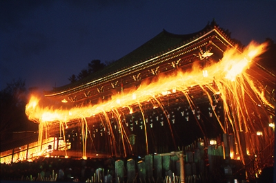
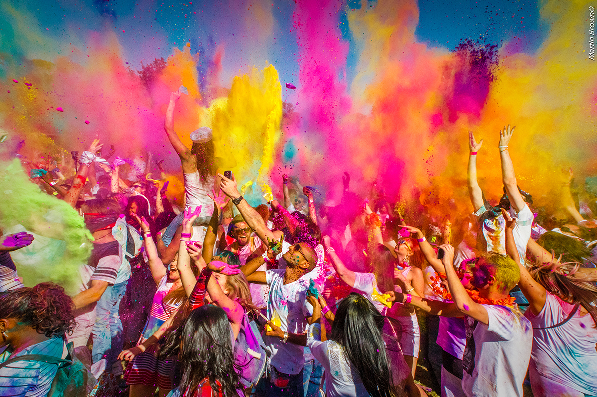
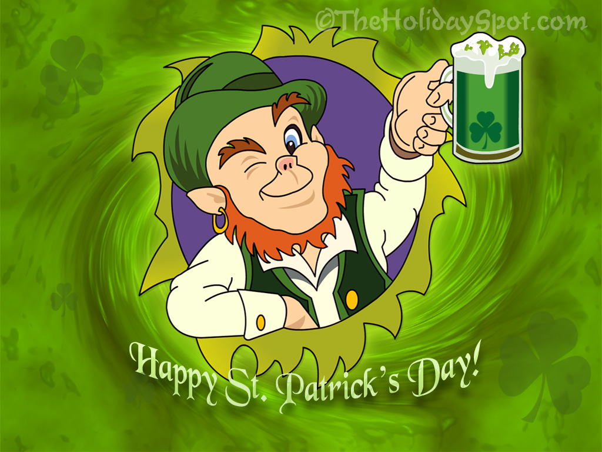
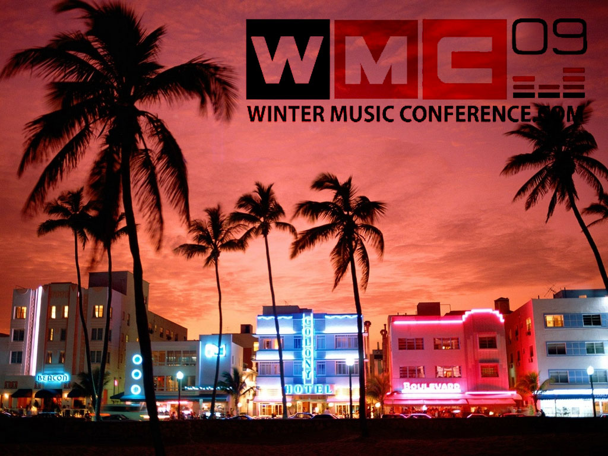
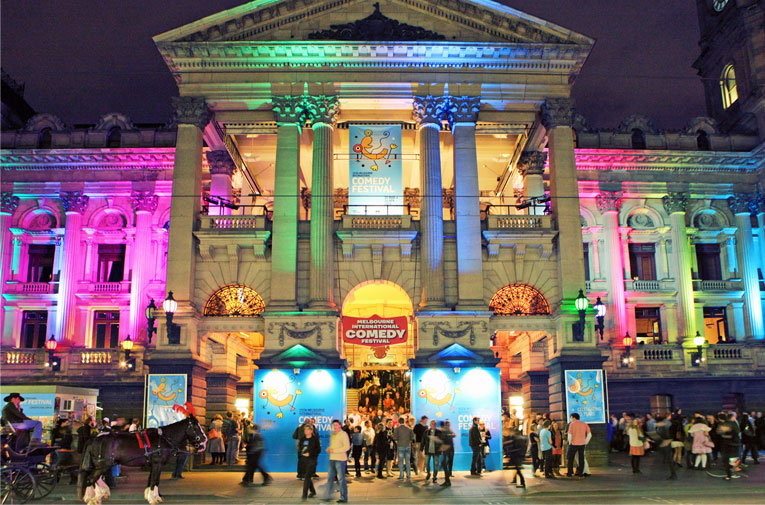
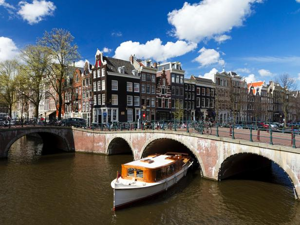
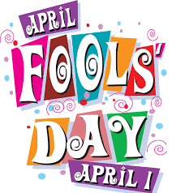
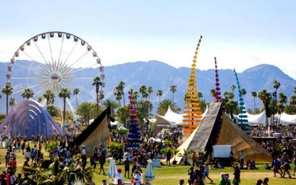
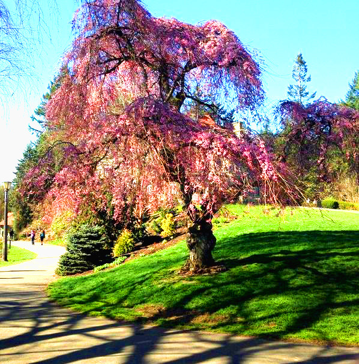
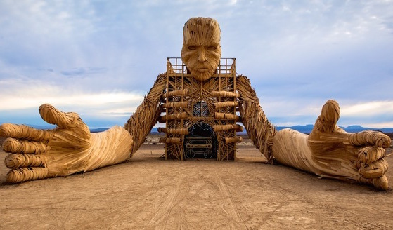

Spring
Omizutory
(March 1-14)

Omizutori is the commonly used name for Shunie, a series of events held annually from March 1 to 14 at Todaiji Temple. This collection of Buddhist repentance rituals has been held every year for over 1250 years, making it one of the oldest reoccurring Buddhist events in Japan.
Fashion Week
(Paris, March 4-11)
Paris Fasion Week has arrived for a stylish eight days in Facion Month celebrating design in the City of Lights. It's time for Parisian designers to show what they've got in store for us for the upcoming Fall/Winter style season.
Holi Colour Festival
(India, March 6)

Thousands of people, dressed in white, come together to share in music, dance, performance art and visual stimulation. Holi One brings this unforgettable experience to cities all around the world.
SXSW Music Festival
Texas (March 9-12)

The South by Southwest Conferences & Festivals offer the unique convergence of original music, independent films, and emerging technologies. Fostering creative and professional growth alike, SXSW is the premier destination for discovery.
F1 Grand Prix
Melbourne, Australia (March 15)
The Grand Prix is the oldest surviving motor racing competition held in Australia having been held 79 times since it was first run at Phillip Island in 1928.
St Patrick^s Day
Ireland (March 17)

This holiday is celebrated every year on March 17th, honoring the Irish patron saint, St. Patrick. The celebrations are largely Irish culture themed and typically consist of wearing green, parades, and drinking.
Winter Music Conference
Miami Beach (March 24-28)

Established in 1985, WMC is the largest longstanding EDM and dance music industry gathering of its kind in the world. As one of the most publicized annual events in the industry, WMC generates over a billion unique viewer media impressions each year.
Melbourne International Comedy Festival
Australia (March 25 - April 19)

The Melbourne International Comedy Festival will celebrate its 30th year in 2016 and is one of the three largest comedy festivals in the world, alongside Edinburgh Festival Fringe and Montreal's Just for Laughs Festival.
What's going on in April?

You've heard April showers bring May flowers, but don’t let that halt your travel plans this month. Take a look at our list of not-to-miss events and destinations that are perfect for a fun spring getaway in April.
April Fool^s Day
(April 1)

Although the day has been celebrated for several centuries by different cultures, its exact origins remain a mystery. Many say that April Fools’ Day dates back to 1582, when France switched from the Julian calendar to the Gregorian calendar.
Good Friday
USA (April 3)

Good Friday occurs two days before Easter Sunday in the United States. It is the day when Christians commemorate Jesus Christ's crucifixion, which plays an important part in the Christian faith.
Easter Sunday
USA (April 5)

FIND
Coachella Valley Music Festival

FIND
National Cherry Blossom Festival

A cherry blossom is the flower of any of several trees of genus Prunus, particularly the Japanese Cherry, Prunus serrulata, which is called Sakura after the Japanese.
Songkran

FIND
ANZAC Day
FIND
King's Day
FIND
May Day
FIND
Bank Holiday
FIND
Cinco de Mayo
FIND
Prague Spring International Music Festival
FIND
Cannes Film Festival
FIND
Vivid Festival
FIND
Bath International Music Festival
FIND
Monaco F1 Grand Prix
FIND
Roland Garros French Open
FIND
Memorial Day
FIND
AfricaBurn

Since its founding in 2007 on a private farm called Stonehenge next to the Tankwa Karoo National Park far away from civilization (about 250 miles outside Cape Town) in the Northern Cape Province of South Africa. Like at Burning Man, you better be pretty intentional in your desire to make this trek. Given that the event is during the southern hemisphere’s early fall, there are so many similarities to Burning Man, you may feel like you’re hallucinating. In fact, the event is held over South Africa’s version of Labor Day, May Day. And, given the nature of the event, that may be true depending upon your predilections.